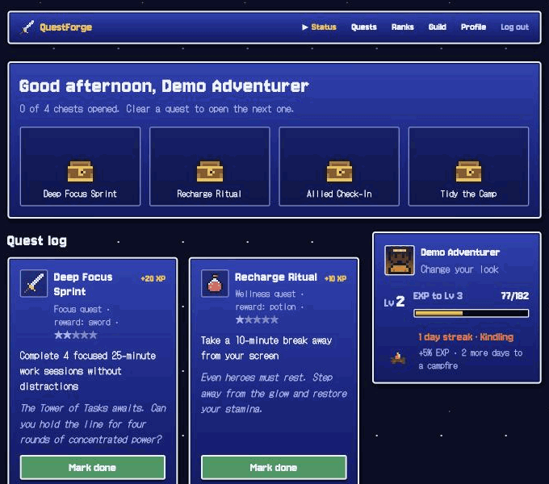
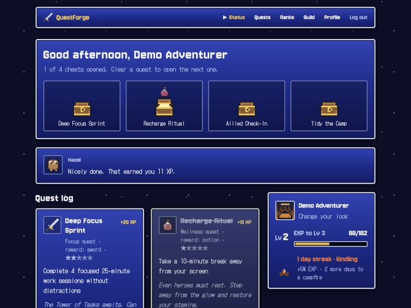
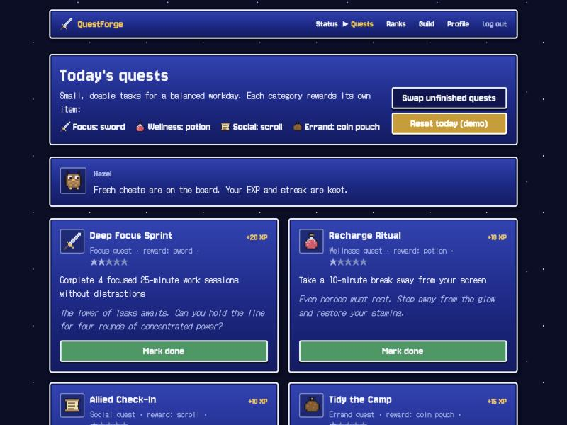
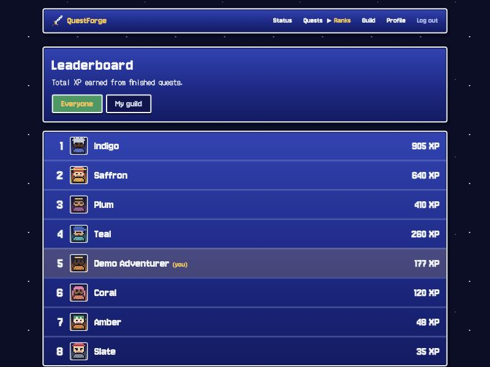
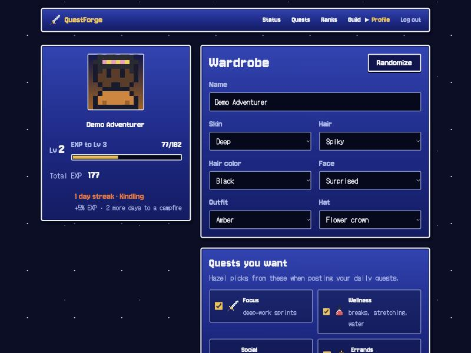

QuestForge
A cozy retro RPG that turns small daily tasks into quests. An AI game master posts a few quests each morning, like a focus sprint, a stretch break or a message to a friend. Finishing them earns XP, opens treasure chests and keeps your campfire burning.
Built with
- Next.js
- FastAPI (Python)
- Rust (axum)
- PostgreSQL
- Redis
- Docker
- Claude or OpenAI API
A closer look





Five services run together: the Next.js interface, a FastAPI backend for accounts, quests and the AI game master, and a Rust engine that owns the game rules (XP, levels, streaks and leaderboards, kept in Redis). Guilds let small groups join with an invite code and compete on a shared board.
I built it with Claude as my coding partner, taking an unfinished prototype to something an employer can open and play. Along the way we fixed a frontend that wouldn't build in Docker, a Rust container that kept running a placeholder build, and logins that broke on a library update.